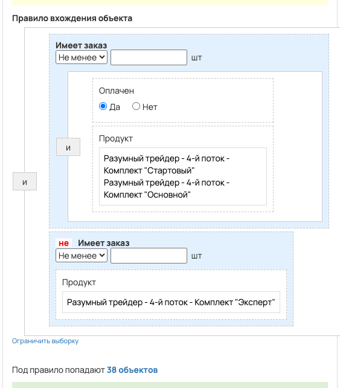
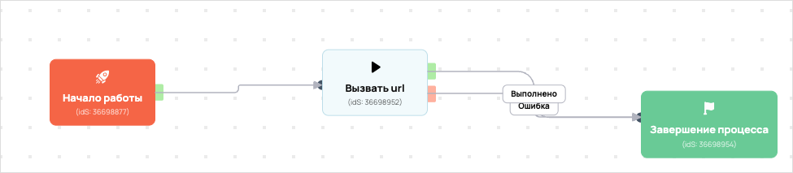

amo da
- ID процесса:
2117777 - Объект: Пользователи
- Статус: Завершен
Описание из GetCourse
30.06.2026. Подробный ход процесса GetCourse:
Главное: В процесс попадают пользователи по правилу: Имеет заказ и НЕ Имеет заказ.
Процесс работает с объектом GetCourse: Пользователи. Текущий статус процесса: Завершен.
Как идет процесс внутри GetCourse:
- Схема состоит из 3 блоков и 3 переходов.
Конец подробного хода процесса GetCourse.
под удаление
Понятное описание процесса
- Процесс работает с объектом GetCourse: Пользователи. Текущий статус процесса: Завершен.
- На вход попадают данные так: В процесс попадают пользователи по правилу: Имеет заказ и НЕ Имеет заказ.
- Дополнительные условия внутри схемы не извлечены: процесс идет напрямую по основной ветке или условия не подписаны.
- Дальше процесс делает прямые вызовы Vakas: 1. Напрямую задействованы базы: 78502.
- Передача: 78502. База 78502: Формы и анкеты. Передаются параметры:
name,email,phone,getcourse_user_id,utm_source,utm_medium,utm_campaign,utm_content,utm_term. - Что происходит в amoCRM: На входе в этап ИНВЕСТ КЛУБ -> ПРОДЛИТЬ ПОДПИСКУ [75971314] база ищет дубль и при необходимости переводит найденную сделку в рабочий этап.
Ход процесса в GetCourse
- Схема состоит из 3 блоков и 3 переходов.
- По типам: стартов 1, условий/ожиданий 0, вызовов URL 1, изменений полей 0, финалов 1.
Блоки процесса: что делают и зачем нужны:
- Блок
36698877«Начало работы» (старт). Что делает: Запускает выполнение схемы для объекта, который попал под правило входа процесса. Зачем нужен: Нужен как точка входа: от него GetCourse начинает движение объекта по схеме. Дальше: если результат «Выполнено», идет в «Вызвать url». - Блок
36698952«Вызвать url» (вызов URL). Что делает: Передает в Vakas: 78502. База 78502, канал «Формы и анкеты» (GET); параметры:name,email,phone,getcourse_user_id,utm_source,utm_medium,utm_campaign,utm_content,utm_term; timeout 10 сек. Зачем нужен: Нужен, чтобы передать подходящий объект в 78502. База 78502; дальше На входе в этап ИНВЕСТ КЛУБ -> ПРОДЛИТЬ ПОДПИСКУ [75971314] база ищет дубль и при необходимости переводит найденную сделку в рабочий этап. Дальше: если результат «Ошибка», идет в «Завершение процесса»; если результат «Выполнено», идет в «Завершение процесса». - Блок
36698954«Завершение процесса» (завершение). Что делает: Завершает ветку процесса после выполненных проверок и действий. Зачем нужен: Нужен, чтобы закрыть текущую ветку и не гонять объект по процессу повторно. Дальше переходов нет: это конечная точка ветки.
Скриншоты процесса


Откуда: процесс берет объекты по правилу входа «Имеет заказ и НЕ Имеет заказ».
Что проверяет по пути: перед отправкой в база 78502 (Формы и анкеты).
Куда ведет: вызывает внешний URL Vakas и передает данные в база 78502 (Формы и анкеты).
Логика Vakas и amoCRM
- Условие входа в процесс: Имеет заказ и НЕ Имеет заказ.
- Вызовов Vakas в схеме:
1. Уникальных URL Vakas:1. Связанных баз:1.
Связанная база Vakas: 78502. База 78502
- Использование в процессе: Формы и анкеты
- Документация базы: 78502. База 78502
- Страница настройки: Vakas
- Поиск дублей: Проверять на дубли
- Искать только в выбранных воронках: 12
- Ответственный по контакту имеет приоритет: Да
Вызовы из процесса
Вызвать url
- Endpoint:
sendform - URL вызова:
https://vakas-tools.ru/base/sendform/8927217/78502/?name={object.name}&email={object.email}&phone={object.phone}&getcourse_user_id={object.id}&utm_source={object.create_session.utm_source}&utm_medium={object.create_session.utm_medium}&utm_campaign={object.create_session.utm_campaign}&utm_content={object.create_session.utm_content}&utm_term={object.create_session.utm_term} - Связанная база Vakas: 78502. База 78502
Когда срабатывает в процессе
- Сценарий 1:
Начало работы--Выполнено-->Вызвать url
Что уходит в Vakas
nameemailphonegetcourse_user_idutm_sourceutm_mediumutm_campaignutm_contentutm_term
Как база обработает вызов и что будет в amoCRM
-
Логика создания сделки: сначала ищется существующая сделка/контакт по правилам базы; если подходящая сделка найдена, обновляется она, иначе создается новая.
-
Режим проверки дублей: Проверять на дубли
-
Искать дубль только в выбранных воронках: 12 шт.
-
Учитывать закрытые этапы при поиске дубля: нет
-
Добавлять телефон/email в найденный контакт: Нет
-
Менять имя контакта при обновлении: Нет <details> <summary>Показать 12 воронок для поиска дублей</summary>
-
ОСНОВНОЙ ОТДЕЛ - ЗАЯВКИ [6777466] -
ПАССИВНЫЙ ДОХОД [9426954] -
КРИПТОКАПИТАЛ [9498394] -
ФИНАНСОВАЯ СВОБОДА [9498398] -
ОД [9839030] -
КРИПТОКЛУБ [9578374] -
ИНВЕСТ КЛУБ [9500418] -
ОТДЕЛ КЛУБОВ [6869966] -
АПСЕЙЛЫ ОП [8910882] -
ОТДЕЛ ДИАГНОСТИК [6844390] -
ЛИДОРУБЫ [9212986] -
ДИАГНОСТЫ [9213518]
</details>
- Автоотправка регистраций в amoCRM: Да
- Базовый этап: ИНВЕСТ КЛУБ -> ПРОДЛИТЬ ПОДПИСКУ [75971314]
- Этапы, из которых разрешен сдвиг: 119 этапов
- Менять название сделки при обновлении: Нет
- Менять имя контакта при обновлении: Нет
- Ответственный по умолчанию: Максим Хоруженко[12235050]
- Всегда менять ответственного: Нет
- Теги сделки: Бесплатная_неделя_ИК_07.25
- Индивидуальные правила маршрутизации: нет